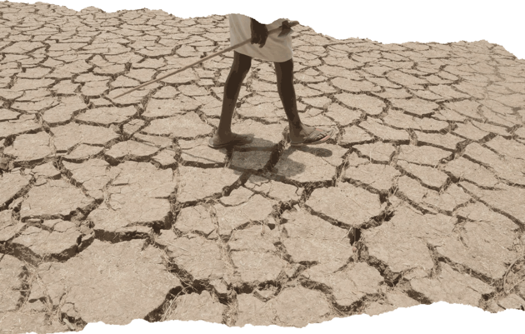
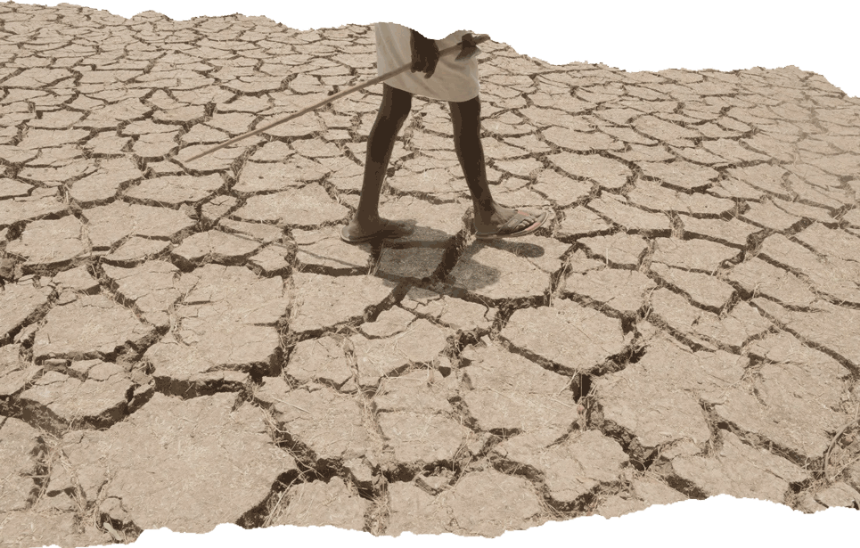
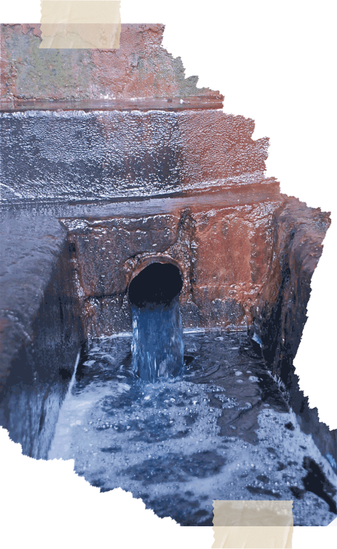

Afval

CO2

Kinderarbeid

Plastic

Ontbossing

Na de landbouwsector verbruikt de kledingsector het meeste water. Het gaat om jaarlijks ruim drie procent van al het water wat op de wereld beschikbaar is.
Het hoge waterverbruik heeft sterk te maken met de populariteit van katoen. Het besproeien van katoenvelden veroorzaakt verzilting van de grond, waardoor akkers ongeschikt raken voor landbouw en droogt omringend land op.
 

Bijna de helft van de afvalwaterproblemen in de wereld heeft te maken met de productie van textiel. Op katoenvelden worden zware toxische chemicaliën, zoals insecticiden en pesticiden, gebruikt. Dit treft naast de landbouwsector ook het drinkwater van lokale bevolkingsgroepen.
De stoffen die textielfabrieken gebruiken komen terecht in rivieren - en uiteindelijk ook in drinkwater.
Het gaat hier om het het gebruik van chloorbleek, chemische verfstoffen en finishings bij het verwerken van de vezels en het maken van de kledingstukken.
